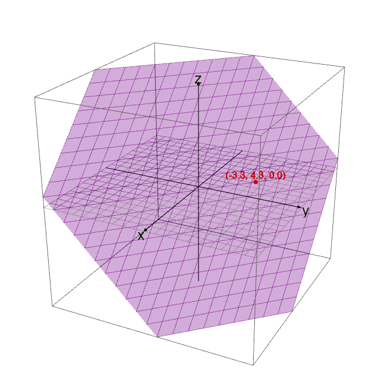

Linear Algebra: Systems of Linear Equations
Systems of linear equations
➝ An equation in the unknowns \(x\;\), \(y\;\), \(z\;\), …, is called linear if both sides of the equation are a sum of (constant) multiples of \(x\;\), \(y\;\), \(z\;\), …, plus an optional constant We will usually move the unknowns to the left side of the equation, and move the constants to the right. .
- A solution of a system of equations is a list of numbers \(x\;\), \(y\;\), \(z\;\), … that make all of the equations true simultaneously.
- The solution set of a system of equations is the collection of all solutions.
- Solving the system means finding all solutions with formulas involving some number of parameters.
➝ A system of equations is called inconsistent if it has no solutions. It is called consistent otherwise.
➝ Let \(n\;\) be a positive whole number. We define \(\mathbb{R^n}\;\) = all ordered n-tuples of real numbers \((x_1, x_2, x_3,\ldots, x_n )\;\;\;\).
Hence, an n-tuple of real numbers is called a point of \(\mathbb{R^n}\;\;\)
ùñüùï≠: The real number line is when \(n\;= 1\;\) of \(\mathbb{R^n}\;\).
ùñüùï≠: Consider the linear equation \(x + y + z = 1\;\;\). This is the implicit equation for a plane in space that is hinged on the three coordinates totaling \(1\;\;\).
The plane defined by x + y + z = 1  Another view of the plane defined by x + y + z = 1
Examples
:{
a = (4><3)
[ 1, 2, 3
, 4, 0, 5
, 7, 7, 2
, 3, 3, 1] :: Matrix R
:}
:{
b = (3><1)
[ 2
, 2
, 2] :: Matrix R
:}
a Numeric.LinearAlgebra.<> b
(4><1) [ 12.0 , 18.0 , 32.0 , 14.0 ]
:{
c = (2><3)
[ 4,5,6
, 7,8,9] :: Matrix R
:}
:{
d = (3><1)
[ 1
, 1
, 1] :: Matrix R
:}
:{
e = (3><2)
[1..] :: Matrix R
:}
c Numeric.LinearAlgebra.<> d
(2><1) [ 15.0 , 24.0 ]
a Numeric.LinearAlgebra.<> e
(4><2) [ 22.0, 28.0 , 29.0, 38.0 , 38.0, 54.0 , 17.0, 24.0 ]
:{
f = (3><2)
[1..] :: Matrix R
:}
:{
g = (3><2)
[6,5..] :: Matrix R
:}
f + g
(3><2) [ 7.0, 7.0 , 7.0, 7.0 , 7.0, 7.0 ]\begin{align*} A(u + v) = Au + Av \end{align*}
(a Numeric.LinearAlgebra.<> (f + g)) == ((a Numeric.LinearAlgebra.<> f) + (a Numeric.LinearAlgebra.<> g))
True\begin{align*} A(cu) = cAu \end{align*}
a Numeric.LinearAlgebra.<> (5 * f)
(4><2) [ 110.0, 140.0 , 145.0, 190.0 , 190.0, 270.0 , 85.0, 120.0 ]
(a Numeric.LinearAlgebra.<> (5 * f)) == 5 * (a Numeric.LinearAlgebra.<> f)
True